A glimpse into the fields, faces, and harvests that make Stackly come alive.
Filter by category to explore different sides of the farm.
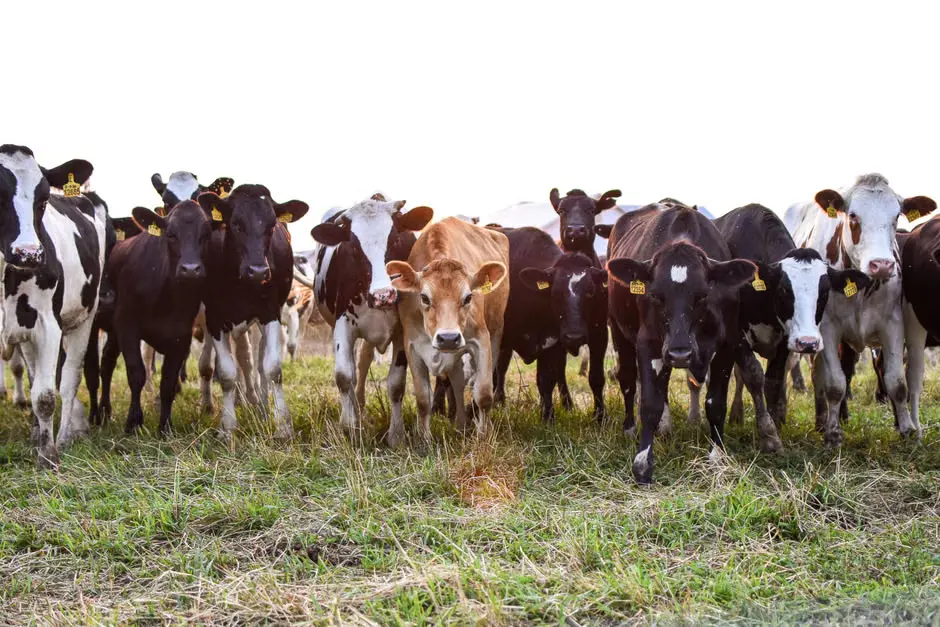
Golden Wheat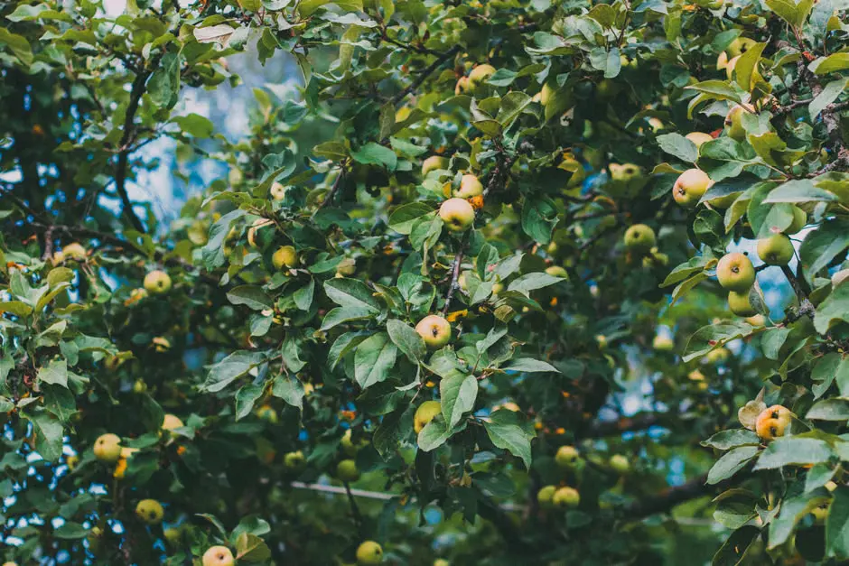
Fresh Veggies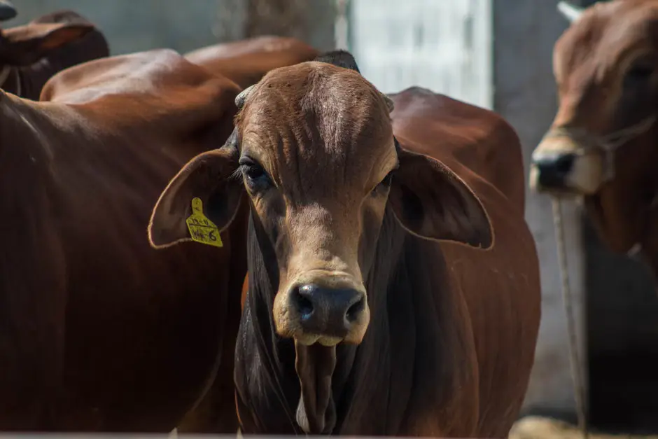
Grazing Herd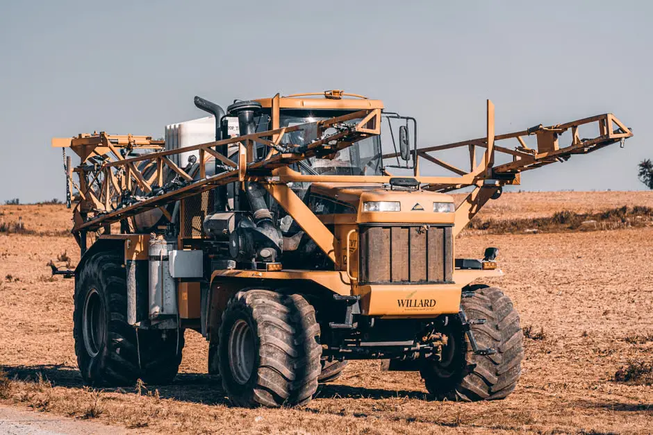
Smart Sprayer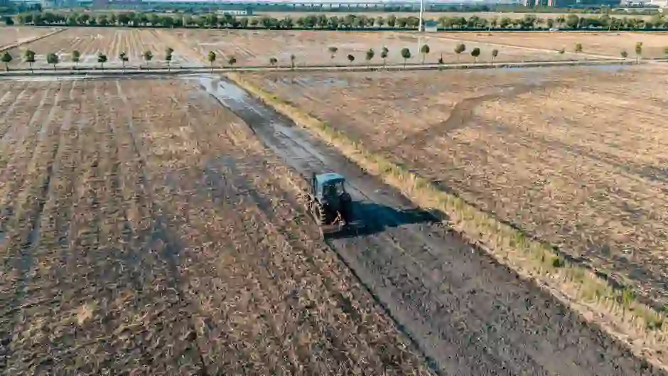
Cropland Mosaic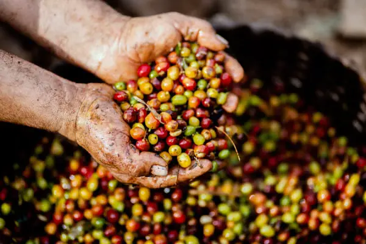
Orchard Apples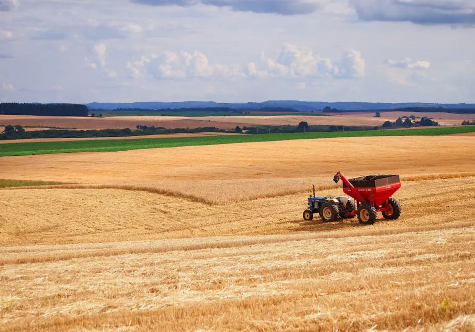
GPS Tractor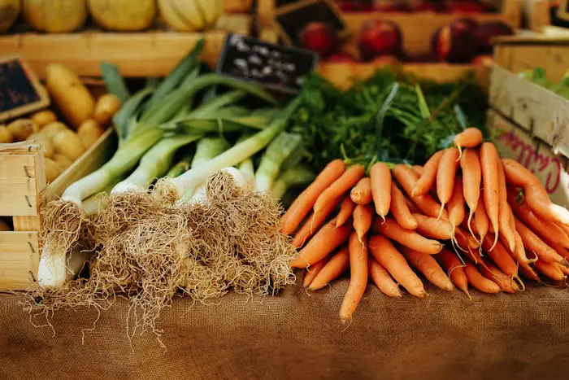
HydroponicsBefore sunrise, our farmers are already in the fields — picking vegetables at peak coolness to lock in freshness. This is the quiet, golden hour that defines every box we deliver.
Take a 3-minute visual tour through our fields, greenhouses, and harvest — see where your food is born.
Every product follows a carefully managed journey to ensure freshness, quality, and sustainability.
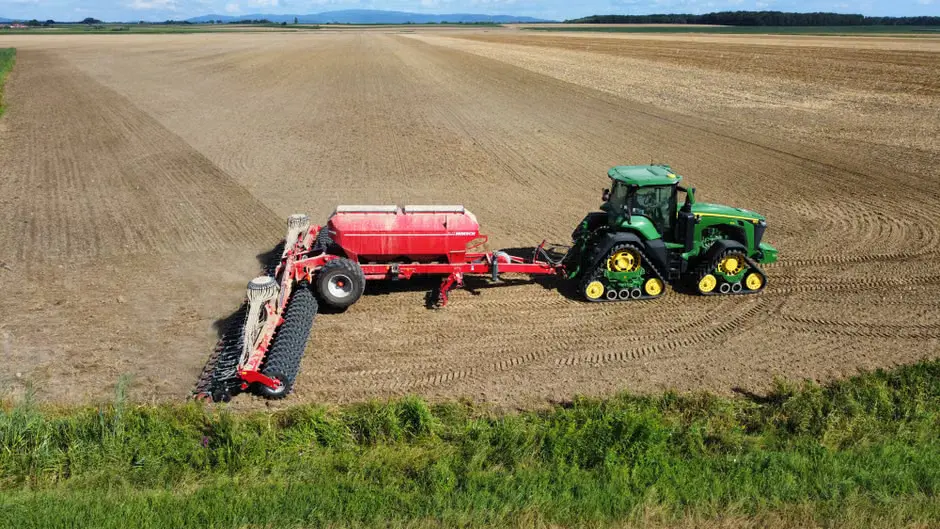
Fresh crops are harvested at peak maturity to preserve nutrition and natural flavor.
Every batch is carefully inspected and graded before moving to the next stage.
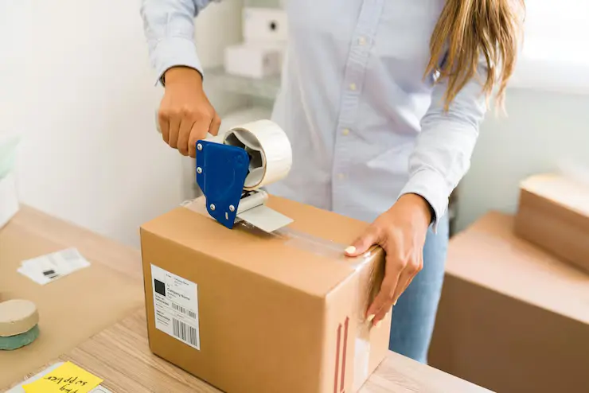
Eco-friendly packaging keeps produce fresh while reducing environmental impact.
Delivered quickly through our cold-chain logistics to maintain maximum freshness.
Discover how our fields transform throughout the year, bringing fresh colors, crops, and experiences in every season.
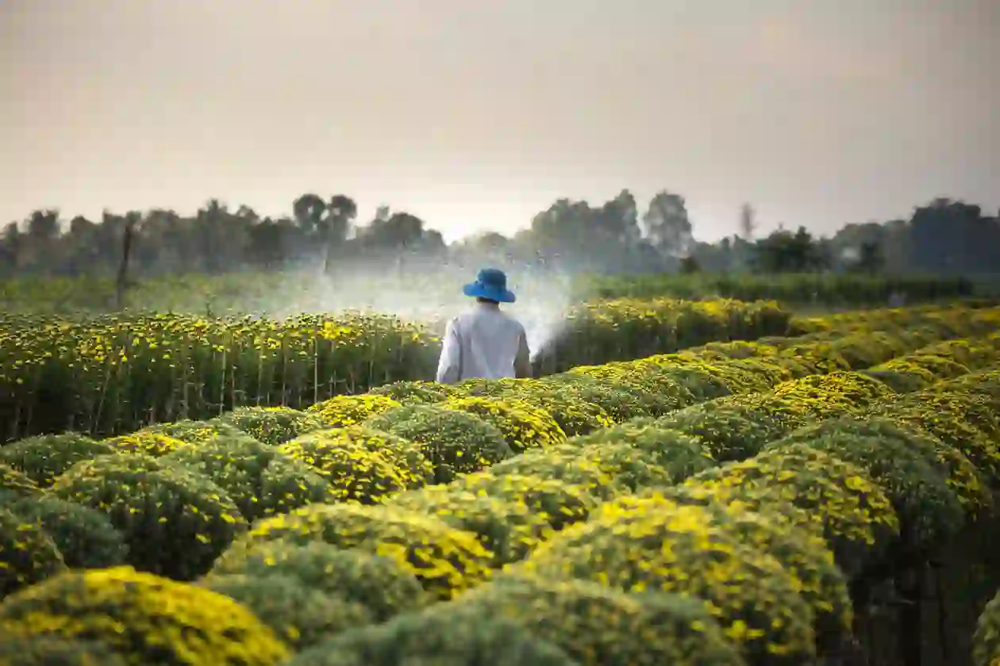
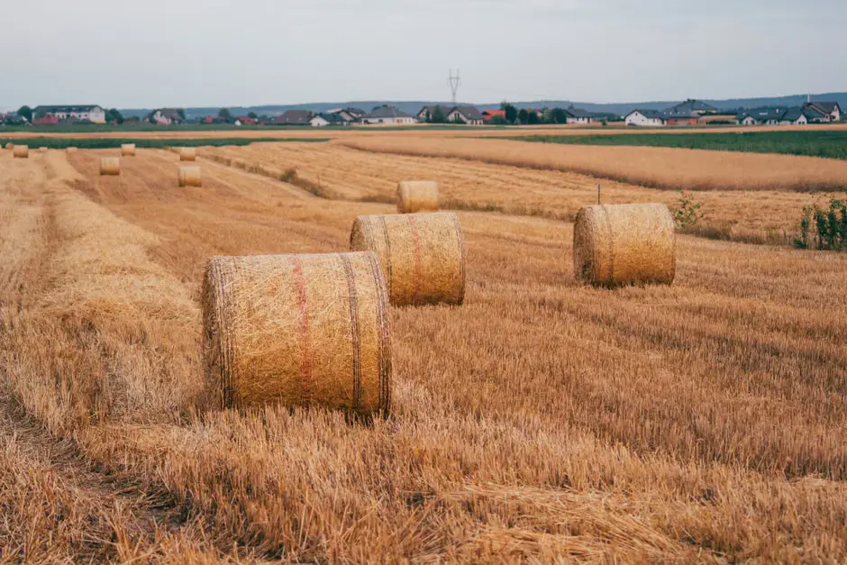
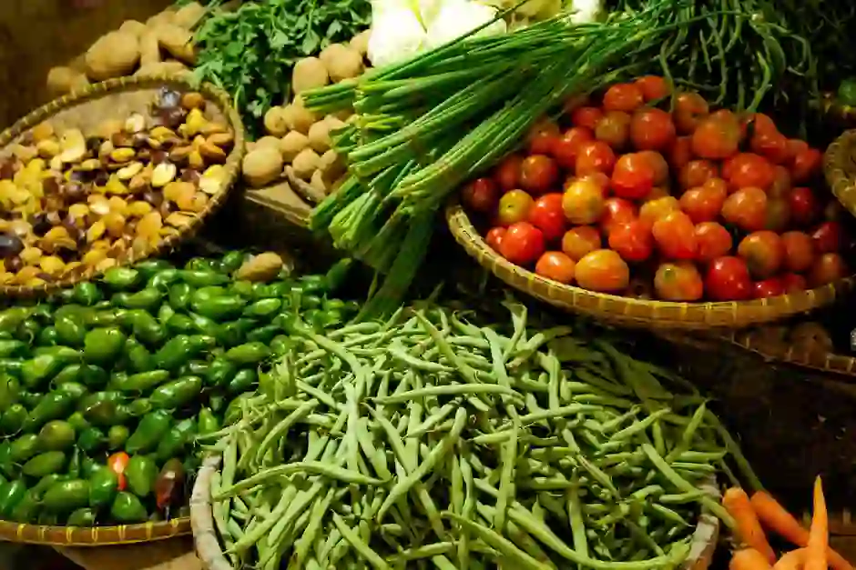
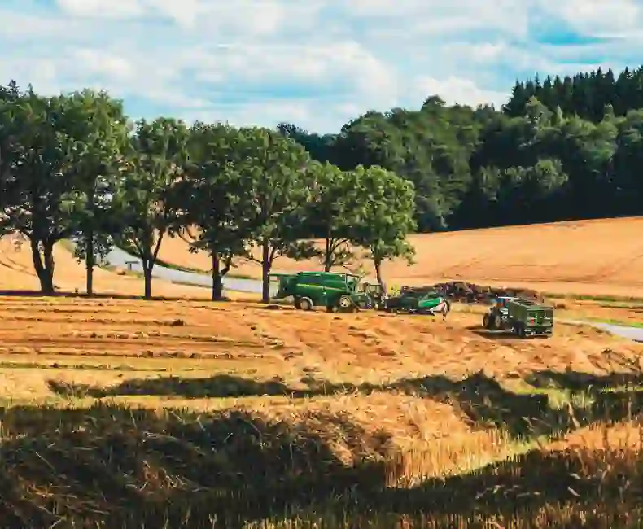
Follow the complete seasonal cycle from planting to delivery.
Healthy seeds are planted in nutrient-rich soil.
Smart irrigation and natural nutrition support growth.
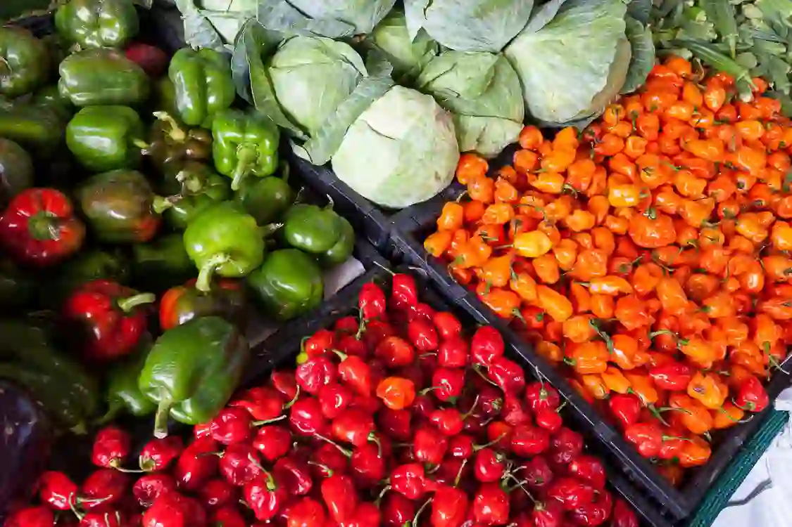
Fresh produce is harvested at the perfect maturity.
Products are packed and delivered while still fresh.
Walk through lush fields, modern greenhouses, irrigation systems, and harvest areas with our immersive virtual farm experience.
Modern tractors & smart equipment.
Walk through healthy crop plantations.
Explore automated watering systems.
Visit climate-controlled farming zones.
Meet the passionate farmers whose dedication and experience bring fresh, healthy produce from our fields to your table.
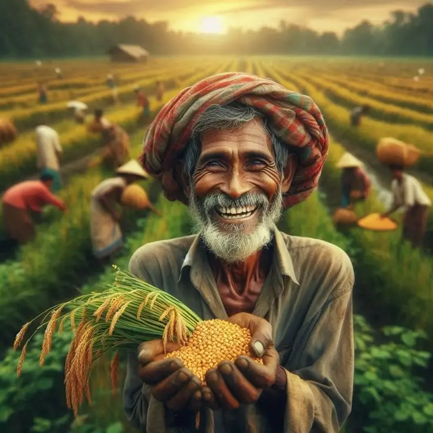
18 years of experience growing pesticide-free vegetables.
View Profile →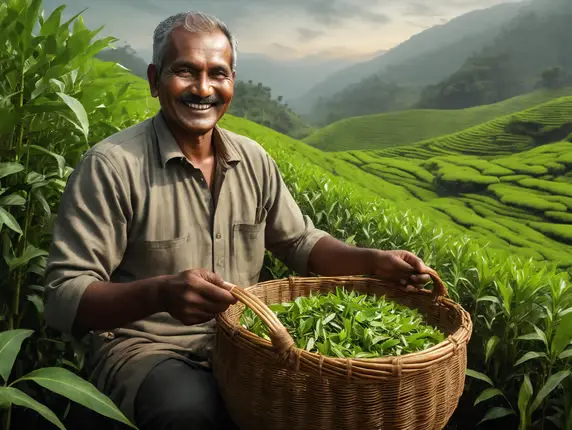
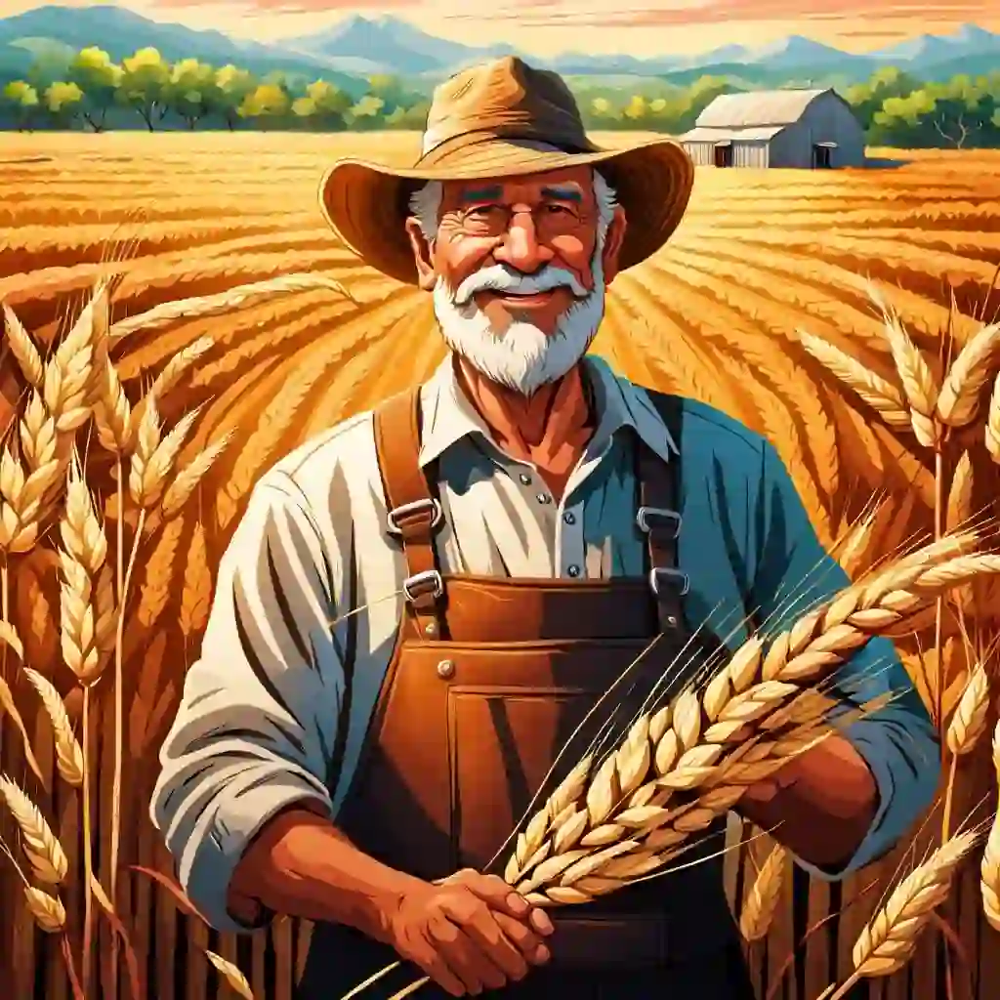
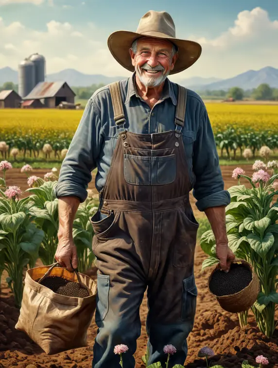